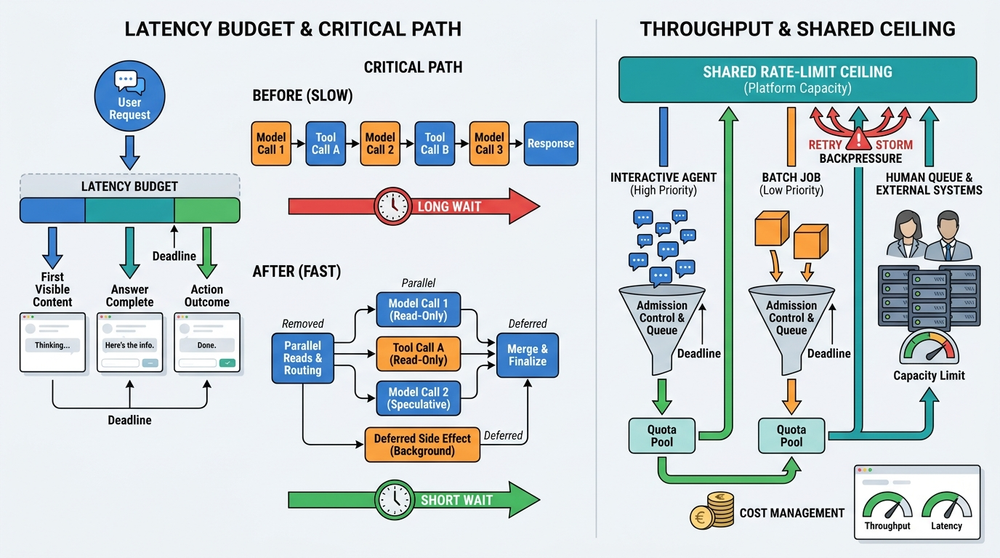

Part IX — ECONOMICS: Performance, Cost and Scale
Latency and Throughput
AI-assisted: written with Claude Code, images generated with the Gemini API. How this works

Image generated by Google Gemini (gemini-3-pro-image-preview)
Part IX — ECONOMICS: Performance, Cost and Scale
AI-assisted: written with Claude Code, images generated with the Gemini API. How this works

Image generated by Google Gemini (gemini-3-pro-image-preview)